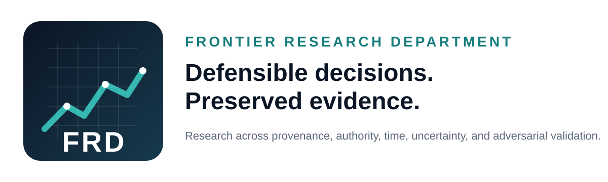

Public Verification Surface
EPM Runtime Verification Demo
A historical EPM runtime verification surface demonstrating evidentiary provenance, state-transition assurance, and bounded runtime evaluation.
Status boundary: This is a historical verification deployment and should not be interpreted as the current EPM production candidate, a current release declaration, or disclosure of unreleased implementation details.